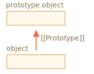
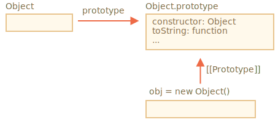

JS Concept: Prototypal Inheritance (P4)
[[Prototype]]
Mọi object trong JS đều có thuộc tính ẩn [[Prototype]] . Thuộc tính này có giá trị là null hoặc đường dẫn đến 1 object khác. Object này được gọi là ‘1 prototype’.

Khi đọc 1 thuộc tính trong object, nếu object không tồn tại thuộc tính đó, JS sẽ tìm đến prototype object, nếu vẫn ko có sẽ tìm đến protype của prototype object. Việc tìm này sẽ dừng lại khi tìm thấy thuộc tính và trả về giá trị của thuộc tính hoặc đến khi không tìm thấy prototype object nào nữa ( prototype có gía trị bằng null ) thì sẽ trả về undefined (cơ chế tương tự scope chain).
const animal = {
eat() {
console.log(`Eating`)
},
}
// Object.create tạo ra 1 object có prototype là object truyền vào.
// Dòng code dưới tạo ra object dog có prototype là object animal
const dog = Object.create(animal)
// object dog không có phương thức eat, tuy nhiên prototype của nó là animal
// có phương thức eat do vậy dòng lệnh dưới vẫn in ra kết quả
dog.eat() // Eating
Ngoài Object.create , có nhiều cách khác để đặt giá trị [[Prototype]] cho 1 object.
const cat = {}
Object.setPrototypeOf(cat, animal)
// hoặc
cat.__proto__ = animal
Bản chất __proto__ là getter/setter của [[Prototype]] . Hiện tại việc sử dụng getPrototypeOf / setPrototypeOf được khuyến khích hơn.
Prototype object chỉ được sử dụng khi đọc 1 thuộc tính. Còn khi tạo, cập nhật hoặc xóa 1 thuộc tính thì thuộc tính đó sẽ được tạo hoặc xóa trực tiếp ở object con, ko gây ảnh hưởng đến prototype.
Để kiểm tra 1 object có chứa trực tiếp thuộc tính nào hay không chúng ta có thể dùng method hasOwnProperty.
dog.eat = function () {
console.log('Dog is eating')
}
dog.eat() // Dog is eating
cat.eat() // Eating
dog.hasOwnProperty('eat') // true
cat.hasOwnProperty('eat') // false
JS cung cấp nhiều cách để lấy được danh sách thuộc tính của 1 object.
- Object.keys(obj): trả về mảng các thuộc tính trực tiếp thuộc về object, ko lấy thuộc tính của prototype
- for … in: chạy lần lượt qua các thuộc tính trực tiếp của object và thuộc tính của prototype.
console.log(Object.keys(dog)) // ['eat']
console.log(Object.keys(cat)) // []
for (const prop in cat) {
console.log(prop)
}
// eat
Object.prototype
Nếu bạn để ý, thì ở trên chúng ta có sử dụng method hasOwnProperty , nhưng method này không tồn tại ở object dog hoặc cat, mà cũng ko ở animal. Ngoài ra khi dùng Object.keys hoặc for…in thì thuộc tính này đều không được trả về. Câu hỏi đặt ra là thuộc tính này từ đâu mọc ra? 🙃

Ở hình trên Object là 1 built-in constructor function (constructor function dùng với ý nghĩa tương tự như class ở trong các ngôn ngữ khác). function Object có thuộc tính prototype là 1 object với các method .
Việc tạo obj = {} cũng tương đương với obj = new Object(). Lúc này, [[Prototype]] của object nhận giá trị mặc định là Object.prototype. Các thuộc tính trong Object.prototype đều được cài đặt enumerable là false.
Ở ví dụ trên, chúng ta có 2 object dog và cat được chugns ta đặt [[Prototype]] là animal, còn animal có [[Prototype]] mặc định sẽ là Object.prototype.
Tham khảo: